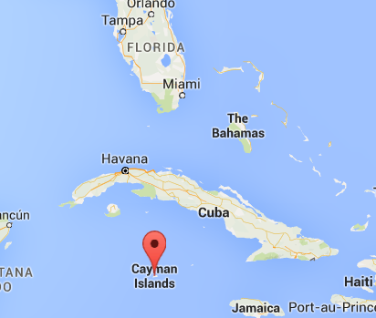

Elizabeth was born on January, 7, 2002 in Grand Cayman, located in the Caribbean to a Cuban mother and Jamacian father.
She is curently 17 years old and loves God, her family, music and food!
Her nick names are; Liz, Lizzy and Mariposa. Mariposa translates to butterfly and
since she can remember her mother has
been calling her by that name, and therefore it has became apart of her identity.
She likes to believe we are all catipillars going through the process to better ourselves and become a butterfly.
Elizabeth is a strong believer in love. She believes the world would be a better place if we all loved each other a little harder.
.
Elizabeth is most proud of the fact that she can speak two languages, growing up with a Cuban mom has allowed her to experience the colorful and exotic culture. She enjoys watching Spanish novelas with her family, eating traditional Cuban food such as Ropa Vieja and listening to Spanish music.


Pictured above are the places Elizabeth hopes to visit; Thailand, Italy, Greece, Spain, Bahamas